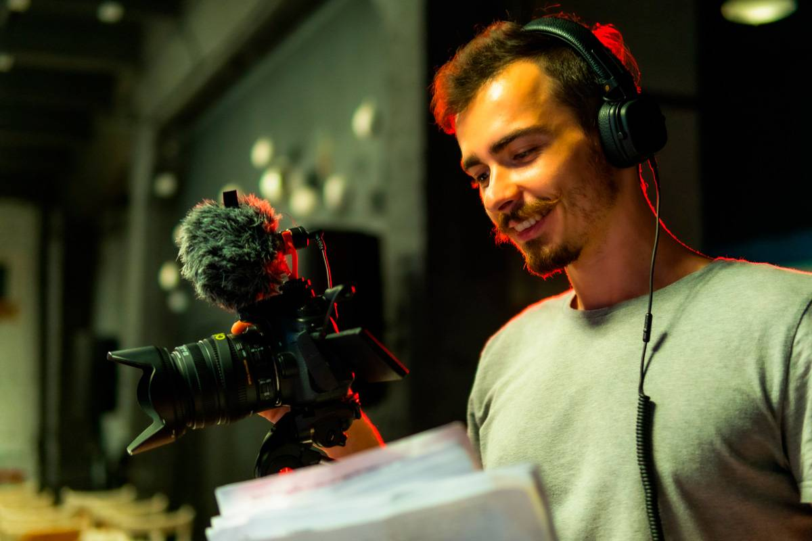
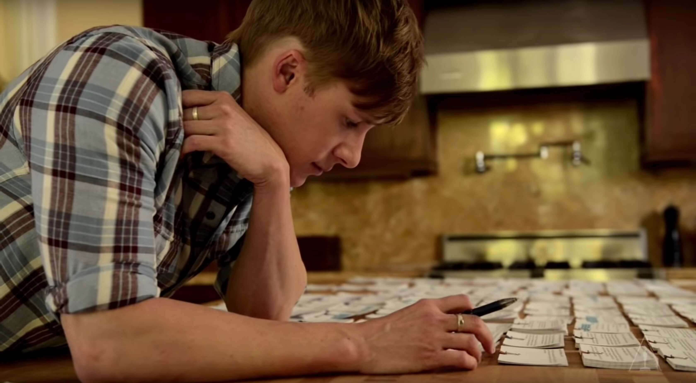

Sobre Nosotros
Fundada en el 2021 por Gustavo Rojas (Guionista y Actor), Indie.arg es una web dedicada a promover el arte
independiente. En nuestro sitio podrás encontrar
películas, libros, cortometrajes, cuentos, podcasts, música y arte visual; todo creado por artistas
independientes; ya que sabemos que no es fácil autogestionar
proyectos con bajo presupuesto, en estos tiempos en los cuales las grandes productoras acaparan todos los
medios. Por eso nuestra página inicial tiene un filtro
dedicado a facilitar las búsquedas, y a hacer el arte independiente más accesible para aquellos que deseen
apoyarla.
Nuestro Equipo
-
Christian G

-
Mariana M
-
Octavio S

-
Gustavo R
Cineasta y Profesor de Actuación con más de 5 años de experiencia

Periodista y Fotógrafo con más de 6 años de experiencia
Estudiante de Cine y escritor